transforming CHECKPOINTS into MEETING-POINTS
| home |
| about |
| work |
| story |
| schedule |
| links |
| MEET OUR TEAM |
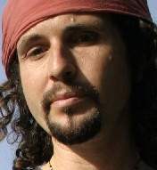 Dhyan OrBorn in Jerusalem, to new immigrant Jews from the Soviet Union, Dhyan grew up with kids whose families came from Morocco, Iran and Iraq. He later travelled in the Middle East, the Far East and Europe, connecting with extra-ordinary people who lead simple lives according to ancient wisdom. A connection with a unique Palestinian man brought him back to Jerusalem, where he discovered a whole quarter of his childhood city which had always been hidden from his eyes. It was in this place, on the Mount of Olives, where he was inspired by the spirit of hospitality and caring of his host, together with loving and supporting friends, to realize the dream of the All Nations Café. 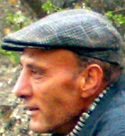Abed Abd RabaA son of farmers from Walaja village, south of Jerusalem, Abed was born in Dheishe refugee camp near Bethlehem. Embodying the Palestinian spirit of freedom and peace, he is first and foremost a man of the land. A falah who cultivates his plants with such care, love and connection with the earth, that even the soldiers who try to drive him away from his ancestral land are compelled to honor. 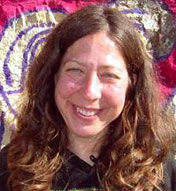 Lisa TalesnickSharing her time between British Columbia, Jerusalem and Bethlehem - Lisa is dearly loved by many, young and old, on both sides of the globe. While heading a news company, running day camps for Palestinian kids and supporting All Nations Café projects, she can introduce the Circassian spirit in a way that inspires people to dance with the grace and self esteem of princes and princesses. 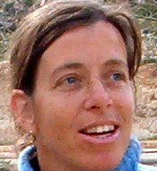Daphna RosenbergDaphna is a gifted singer and musician, dedicated to opening hearts and connecting people to each other and to God, through her music. After years of traveling and singing through many places around the world, she is now committed to living in Israel and singing around the Middle East, where the work is desperately needed. Daphna has helped set up many of the All Nations Cafe caravans, gatherings and camps and brought the spirit of song and dance into them. Her intention is to expand her work by introducing the Dances of Universal Peace. 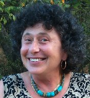Miriam IronAn "Ageless Woman", Miriam is a charismatic performer, who charms her audience, whether in a concert hall or at a street corner. Living in Jerusalem, she takes part in various peace and ecology initiatives. Miriam has recorded several albums of original music with Israeli and Palestinian musicians. Two of her songs have won prizes at a nation-wide Jewish festival in the USA. 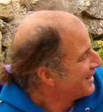Jeff GoldsteinSupporting the All Nations Café since its early days, Jeff has been taking care of the spiritual aspects of our gatherings. Whether our circle numbers five or a hundred people, Jeff always manages to lead us into a healing and blessing space, teaching us to sense our individual and group energies, focus and use them to make a tangible positive change. 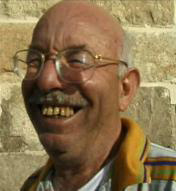Ibrahim Abu el HawaThe man behind it all. Ibrahim is a descendant of a line of farmers who have been living on the Mount of Olives in Jerusalem for more than a thousand years. He is a symbol of hospitality and generosity, and his home is famous around the world as a place of rest and nourishment to body and soul. It is in this home that the first All Nations Cafe project was inspired and conceived, and where the first meetings and gatherings took place among mountains of delicious home made Middle Eastern food. 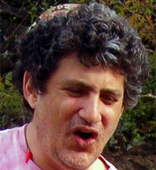Ofer GolanyA talented guitarist and composer, with many concerts and albums behind him, Ofer keeps performing in Israel and in Europe with his Palestinian partners. He demonstrated his courage and devotion by offering live music to the All Nations Cafe during its first challenging months of operation. He also recorded and produced the All Nations Cafe Caravan CD, as well as contributed a number of compositions to it. 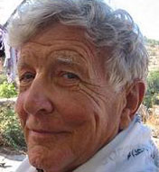 Dr. David LeigthonEven though he retired from his occupation as an ophthalmologist, David is fully committed to fixing people's sight so it can accept the vision of peace through brotherhood. His attraction to the orient has pulled him from various places in Europe, mainly the UK and Germany, to the Middle East, where he is known as King David of Arabia, and admired by Palestinians, Jordanians and Israelis, who all see him as a close benevolent relative and a relentless believer in the good nature of man. 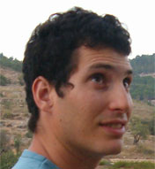 Nimrod KovnerA student at the Hebrew University who loves physical and mental work alike, Nimrod is the focalizer of our Springs and Terraces project. Living, studying and working in Jerusalem, Nimrod proves as a great contact to the local student community and to the Israeli Nature Authority. 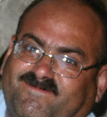 Hamze FanounElectrician and expert in motors, who loves music, dancing and smoking his nargila wearing a tambourine round his neck, Hamze is the spirit and the heart behind the late night haflas at the all nations cafe. He lives with his wife and children in Nahaleen village, down the hill from his dream house, which was demolished shortly after he finished building it in the late 90's. 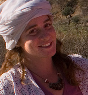 Timna SharirBorn and raised in a Kibbutz in the Galillee region of Israel, Timna has put her strong sense of community to use in initiating and organizing the Ein Haniya Fair, a happening of ecology, culture and commercial exchange. Timna's wide network of friends has brought plenty of new young people to visit and take part in the All Nations Cafe gatherings. 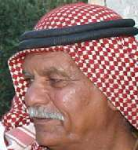 Fakhri Abu AbdallahLooking back on his life, Abu Abdallah can tell stories from the time of the British Mandate, the Jordanian Kingdom and Israeli State, which came and went in front of his eyes only to see him still working on what is left from his ancestral land. He is living on the outskirts of Walaja village, in a house he built by himself, having no electricity or running water, but always ready to welcome guests of all nations. |
DONATE
CONTACT US
|